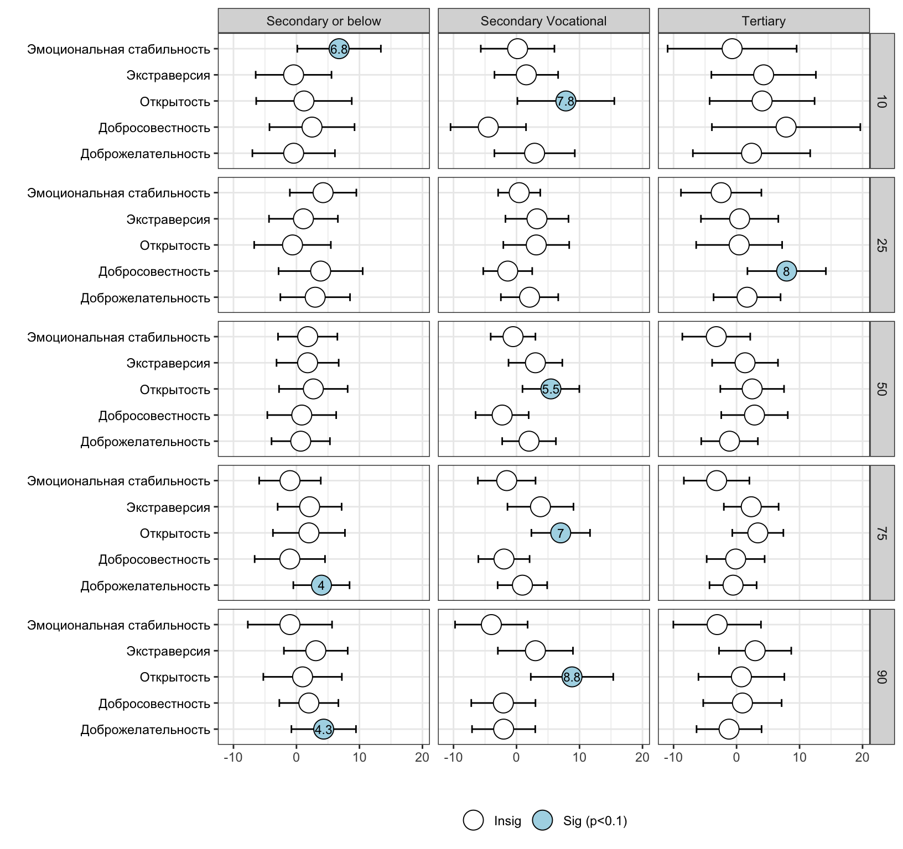
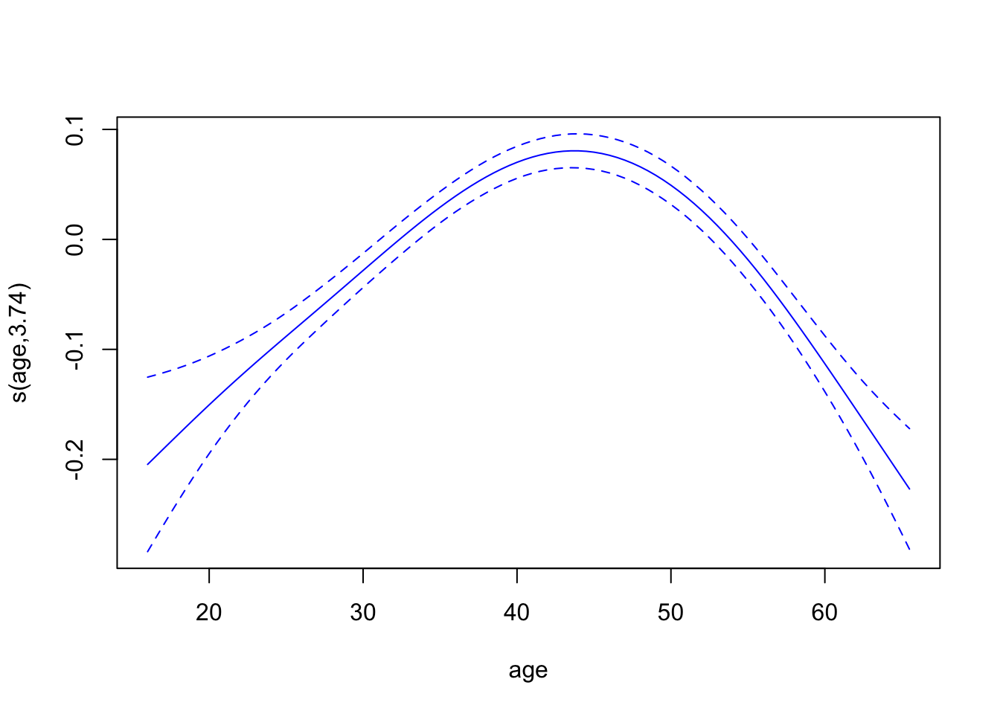

| variable | Q10 | Q25 | Q50 | Q75 | Q90 |
|---|---|---|---|---|---|
| Note: p<0.001 (***); p<0.01 (**); p<0.05 (*); p<0.1 (.) | |||||
| Базовые категории для категориальных переменных: «женщина» для переменной пол, и «сельская местность» для переменной тип населенного пункта. | |||||
| Источник: расчеты автора на основе данных РМЭЗ за 2016 и 2019 годы. | |||||
| Intercept | 3.914 (0.16)*** | 4.371 (0.06)*** | 4.647 (0.08)*** | 4.744 (0.09)*** | 5.058 (0.1)*** |
| Experience | 0.089 (0.02)*** | 0.087 (0.01)*** | 0.065 (0.01)*** | 0.081 (0.01)*** | 0.024 (0.01). |
| Experience Sqd. | -0.005 (0)** | -0.006 (0)*** | -0.004 (0)*** | -0.004 (0)*** | 0 (0) |
| Area: Settlement | 0.088 (0.1) | 0.005 (0.07) | 0.041 (0.07) | 0.122 (0.08) | 0.144 (0.08). |
| Area: City | 0.257 (0.1)* | 0.05 (0.07) | 0.135 (0.06)* | 0.236 (0.06)*** | 0.289 (0.07)*** |
| Area: Reg Center | 0.258 (0.2) | 0.068 (0.19) | 0.19 (0.18) | 0.26 (0.18) | 0.303 (0.18) |
| Sex: Male | 0.461 (0.07)*** | 0.288 (0.03)*** | 0.242 (0.03)*** | 0.291 (0.03)*** | 0.257 (0.04)*** |
| Family: Married | -0.062 (0.06) | -0.051 (0.02)* | -0.004 (0.02) | -0.001 (0.03) | 0.011 (0.03) |
| Family: Divorced | -0.055 (0.09) | -0.022 (0.07) | 0.023 (0.06) | 0.025 (0.08) | 0.077 (0.1) |
| Openness | 0.057 (0.02)* | 0.059 (0.02)** | 0.055 (0.02)** | 0.073 (0.02)*** | 0.076 (0.02)** |
| Conscientiousness | 0.018 (0.03) | 0.016 (0.02) | 0.01 (0.01) | -0.012 (0.01) | -0.021 (0.02) |
| Extraversion | 0.006 (0.03) | 0.001 (0.01) | 0.01 (0.01) | 0.016 (0.01) | 0.007 (0.01) |
| Agreeableness | 0.036 (0.02) | 0.009 (0.02) | 0.012 (0.01) | 0.002 (0.02) | 0.005 (0.02) |
| Emotional Stability | 0.028 (0.02) | 0.02 (0.01) | 0.009 (0.01) | -0.005 (0.01) | -0.021 (0.02) |
| Region | Controlled | Controlled | Controlled | Controlled | Controlled |
| No. Groups | 2170 | 2170 | 2170 | 2170 | 2170 |
| No. Obs | 2673 | 2673 | 2673 | 2673 | 2673 |
5 Отдача от некогнитивных навыков: насколько она гетерогенна в зависимости от уровня оплаты труда?
5.1 Постановка исследовательской задачи
Влияние некогнитивных навыков на уровень заработной платы является хорошо задокументированным как в международной, так и в российской экономической литературе. Однако потенциальная гетерогенность данного эффекта по различным уровням распределения заработной платы остается недостаточно исследованной. В частности, остается неясным, являются ли отдачи от некогнитивных навыков равномерными по всему диапазону заработков или же они различаются в зависимости от уровня оплаты труда — среди работников с низкими, средними и высокими доходами. Несмотря на то, что исследования на российских данных пока не анализировали этот аспект, ряд международных работ с применением квантильной регрессии указывает на то, что отдача от некогнитивных характеристик может существенно варьироваться вдоль распределения заработной платы (Collischon, 2017; Edin и др., 2022; Eren & Ozbeklik, 2013; Lindqvist & Vestman, 2011).
Настоящее исследование развивает данное направление, анализируя отдачу от некогнитивных навыков на российском рынке труда, с акцентом на молодежь, выходящую на рынок труда. Фокус на молодежной когорте позволяет глубже понять, какую роль играют личностные характеристики в процессе перехода от учебы к работе, а затем к устойчивой занятости. Актуальность такого подхода обусловлена уникальными трудностями, с которыми сталкиваются молодые люди при трудоустройстве, и необходимостью выявить, какие именно навыки способствуют получению более качественных рабочих мест на раннем этапе карьеры. В целом, данная работа вносит вклад в развивающуюся литературу об экономической отдаче от некогнитивных навыков, с учетом российского контекста, и заполняет важный пробел в понимании того, как личностные характеристики влияют на зарплатные результаты на различных уровнях распределения дохода и в разных демографических группах.
Исходя из обозначенной проблематики, исследование ориентировано на ключевой исследовательский вопрос: Как некогнитивные навыки влияют на уровень заработной платы у молодых работников и варьируются ли эти эффекты в зависимости от уровня дохода и демографических характеристик? В частности, получают ли равную выгоду от некогнитивных навыков молодые работники с низкими, средними и высокими доходами?
Для ответа на этот вопрос работа формулирует ряд дополнительных задач, направленных на выявление более тонкой роли некогнитивных характеристик в формировании заработной платы в контексте жизненного цикла и рыночной динамики:
Вносят ли некогнитивные навыки вклад в уровень заработной платы независимо от образовательного уровня? Несмотря на то, что влияние личностных черт на выбор образования и профессии является установленным фактом, данная задача направлена на выделение их прямого влияния, отличного от опосредованного через образование, и оценку их самостоятельной роли в формировании заработной платы.
Является ли отдача от некогнитивных навыков выше среди лиц с более высоким уровнем образования? Вопрос направлен на изучение того, получают ли лица с высшим образованием большую выгоду от наличия некогнитивных навыков по сравнению с обладателями среднего или более низкого образования.
Различаются ли эффекты некогнитивных навыков в зависимости от пола работника? С учетом сохраняющегося гендерного разрыва в оплате труда как в России, так и в других странах, этот вопрос направлен на выявление того, какие некогнитивные навыки могут способствовать сглаживанию (или, наоборот, усилению) гендерных различий в доходах среди молодежи.
Меняется ли отдача от некогнитивных навыков по мере взросления и продвижения в трудовой карьере? Признавая, что рыночная ценность личностных характеристик может изменяться на разных этапах профессионального пути, данный вопрос направлен на изучение различий в их влиянии на доходы среди молодых, работников среднего возраста и пожилых работников в рамках жизненного подхода.
В отличие от предыдущих работ, выполненных на российских данных, в данной главе используется панель РМЭЗ за 2016 и 2019 годы. Однако предпринятый анализ выходит за рамки существующих исследований за счет применения квантильных смешанных моделей, позволяющих анализировать гетерогенность отдачи от некогнитивных навыков на различных уровнях распределения заработной платы. Этот подход позволяет учитывать повторяющиеся наблюдения в панельных данных и, соответственно, устранять ненаблюдаемую гетерогенность на уровне индивида. Кроме того, для учета возможного смещения выборки, связанного с нерандомным включением в занятость, анализ дополнен использованием инверсных вероятностных весов [inverse probability weights].
5.2 Эконометрическая верификация
Для оценки гетерогенности отдачи от некогнитивных навыков в исследовании используется квантильная линейная смешанная модель – метод регрессии, дополняющий традиционные квантильные регрессии (Koenker, 2005; Koenker & Bassett, 1978; Koenker & Hallock, 2001) смешанными эффектами (Bates и др., 2015; Pinheiro & Bates, 2000), которые позволяют учитывать повторные измерения в панельных данных посредством отдельных случайных эффектов (интерсептов). Таким образом, модель совмещает преимущества как квантильной регрессии, так и уникальные характеристики моделей со смешанными эффектами. В данном анализе выбранные уровни квантилей относятся к заработной плате на 10-м, 25-м, 50-м, 75-м и 90-м процентилях, чтобы учесть отдачу некогнитивных навыков для низко-, средне- и высокооплачиваемых работников на всем спектре оплаты труда.
В текущей главе расчитано несколько регрессий с некоторыми вариациями в спецификации модели. Модель, в которой некогнитивные навыки входят в уравнение заработной платы Минсера в качестве дополнительных входных данных, является расширенной моделью для исследования. Оно дополняет базовое уравнение, которое является тем же самым, за исключением исключения уровня образования. С учётом этого, оценочное уравнение квантильной регрессии для расширенной модели можно записать следующим образом:
\[ \log(\text{Wage})_{\tau} = \beta_{0} + u_{i} + \beta_{1} \cdot \text{Education Level} + \beta_{2} \cdot \text{Experience} + \beta_{3} \cdot \text{Experience}^2 + \beta_{4} \cdot \text{Area} + \beta_{5} \cdot \text{Sex} + \beta_{6} \cdot \text{Martial Status} + \beta_{7} \cdot \text{Region-1} + \] \[\beta_{7} \cdot \text{Openness} + \beta_{8} \cdot \text{Conscientiousness} + \beta_{9} \cdot \text{Extraversion} + \beta_{10} \cdot \text{Agreeableness} + \beta_{11} \cdot \text{Emotional Stability} + \epsilon_{\tau} \]
где \(log(\text{Заработная плата})_{\tau}\) — прогнозируемый логарифм почасовой заработной платы для квантиля \(\tau\) (\(\tau\) = 0,10, 0,25, 0,50, 0,75, 0,90); \(\beta_{0}\) — фиксированная константа; \(u_{i}\) — варьирующаяся константа (случайный интерсепт), специфичная для каждого индивида \(i\) и отражающая разброс на индивидуальном уровне; \(\beta_{1}\) — \(\beta_{10}\) относятся к оценочным коэффициентам, связанным с соответствующими предикторами; и \(\epsilon_{\tau}\) — ошибка квантиля \(\tau\).
Модели были оценены с учётом смещения выборки, возникающего из-за неслучайного отбора респондентов в трудоустройство. В связи с этим были рассчитаны и включены в модель обратные веса вероятности с использованием показателей склонности. Вероятность трудоустройства была смоделирована как функция экзогенных факторов, таких как возраст, пол, уровень образования, регион и тип поселения. Модели, использованные в данном анализе, были оценены с помощью пакета lqmm (Geraci, 2014) в R (R Core Team, 2024). Обратные веса вероятности были рассчитаны с помощью пакета WeightIt (Greifer, 2024).
5.3 Результаты
5.3.1 Какие навыки демонстрируют наибольшую продуктивность?
Анализ направлен на изучение неоднородной отдачи от некогнитивных навыков по всей шкале заработной платы, с акцентом на 10-й, 25-й, 50-й, 75-й и 90-й процентили. Для учета селекции в занятость модели оценивались с использованием инверсных вероятностных весов. Результаты представлены в соответсвующей таблице. Хотя влияние прочих контролируемых переменных выходит за рамки настоящего исследования, регрессионный анализ показывает, что среди молодежи, впервые выходящей на рынок труда, только открытость оказывает положительное и статистически значимое влияние на заработную плату. Более того, это влияние сохраняется на всех уровнях распределения, причем общая тенденция указывает на рост отдачи от открытости с увеличением уровня заработка. Так, влияние открытости составляет 5.7% (p<0.05) на 10-м процентиле почасовой оплаты и достигает 7.6% (p<0.01) для молодежи на 90-м процентиле. Эффект остальных некогнитивных навыков в базовой модели не выявлен. Однако на следующем этапе важно определить, изменяются ли оценки после включения уровня образования в модель.
5.3.2 Некогнитивные навыки и отдача от образования
Расширенная модель включает уровень образования в качестве дополнительной переменной, формируя минсерианскую модель заработной платы с дополнением за счет некогнитивных характеристик. Включение образования существенно изменяет эффекты, особенно для открытости и добросовестности, одновременно выявляя значимую отдачу от самого образования.
В базовой модели открытость демонстрировала устойчивую положительную отдачу на всех процентилях — от 5.7% до 7.6% (Q10–Q90). Однако в расширенной модели, после учета образования, отдача от открытости снижается — до 3.6–4.2% соответственно. Это указывает на то, что часть эффекта открытости в базовой модели обусловлена посредническим влиянием образования. Тем не менее, открытость остается статистически значимой по большинству процентилей, подтверждая её независимую роль.
Интересно, что после учета образования проявляются два других значимых эффекта. Для добросовестности эффект становится положительным и значимым на 10-м процентиле, обеспечивая премию в 4.2% (p<0.1). Экстраверсия дает рост зарплаты на 2.5% (p<0.1) на 75-м процентиле.
Образование оказывается мощным предиктором заработка: высшее образование связано с премиями в 31.4%, 26.5%, 35.3%, 41% и 46.8% соответственно (все p<0.001) по процентилям от Q10 до Q90.
Таким образом, хотя включение образования снижает отдачу от некогнитивных навыков, последние продолжают демонстрировать значимость, подчеркивая их независимую роль в определении различий в доходах.
| variable | Q10 | Q25 | Q50 | Q75 | Q90 |
|---|---|---|---|---|---|
| Note: p<0.001 (***); p<0.01 (**); p<0.05 (*); p<0.1 (.) | |||||
| Базовые категории: «женщина» для пола, «ниже среднего» для образования, и «сельская местность» для места проживания. | |||||
| Источник: расчеты автора на основе данных РМЭЗ за 2016 и 2019 годы. | |||||
| Intercept | 3.88 (0.16)*** | 4.327 (0.1)*** | 4.534 (0.08)*** | 4.607 (0.09)*** | 4.718 (0.1)*** |
| Edu: Second | 0.15 (0.06)* | 0.02 (0.04) | 0.102 (0.04)** | 0.173 (0.04)*** | 0.225 (0.04)*** |
| Edu: Vocat | 0.23 (0.06)*** | 0.105 (0.04)* | 0.191 (0.04)*** | 0.246 (0.04)*** | 0.322 (0.06)*** |
| Edu: Tert | 0.314 (0.06)*** | 0.265 (0.04)*** | 0.353 (0.04)*** | 0.41 (0.04)*** | 0.468 (0.06)*** |
| Experience | 0.044 (0.01)** | 0.04 (0.02)* | 0.053 (0.01)*** | 0.064 (0.01)*** | 0.026 (0.01). |
| Experience Sqd. | -0.002 (0) | -0.002 (0) | -0.003 (0)** | -0.003 (0)** | 0 (0) |
| Sex: Male | 0.427 (0.05)*** | 0.332 (0.03)*** | 0.292 (0.02)*** | 0.308 (0.03)*** | 0.351 (0.04)*** |
| Area: Settlement | 0.113 (0.08) | 0.013 (0.06) | 0.023 (0.05) | 0.074 (0.06) | 0.114 (0.08) |
| Area: City | 0.18 (0.11). | 0.018 (0.07) | 0.125 (0.06)* | 0.155 (0.06)* | 0.241 (0.06)*** |
| Area: Reg Center | 0.175 (0.24) | 0.089 (0.22) | 0.171 (0.22) | 0.164 (0.21) | 0.249 (0.22) |
| Openness | 0.036 (0.02). | 0.034 (0.02). | 0.029 (0.01). | 0.043 (0.02)* | 0.042 (0.02). |
| Conscientiousness | 0.042 (0.02). | 0.013 (0.01) | 0.008 (0.01) | -0.008 (0.01) | -0.005 (0.02) |
| Extraversion | 0.024 (0.03) | 0.007 (0.02) | 0.017 (0.01) | 0.025 (0.01). | 0.009 (0.02) |
| Agreeableness | 0.035 (0.03) | 0.011 (0.01) | 0.005 (0.01) | 0.008 (0.01) | -0.02 (0.01) |
| Emotional Stability | 0.015 (0.02) | 0.019 (0.01) | 0.002 (0.01) | -0.007 (0.01) | -0.023 (0.02) |
| Region | Controlled | Controlled | Controlled | Controlled | Controlled |
| No. Groups | 2170 | 2170 | 2170 | 2170 | 2170 |
| No. Obs | 2673 | 2673 | 2673 | 2673 | 2673 |
5.3.3 Приводит ли наличие высшего образования к большей отдаче от некогнитивных навыков?
Для изоляции эффекта образования как на уровень заработной платы, так и на некогнитивные навыки, были оценены отдельные регрессионные модели для каждой категории уровня образования. В связи с небольшим размером выборки, респонденты с полным средним образованием и те, кто не окончил среднюю школу, были объединены в одну категорию под названием «среднее и ниже». Такой подход позволяет более чётко сравнить отдачу от некогнитивных навыков по разным уровням образования, устраняя потенциальные искажения, вызванные взаимосвязью между образованием и заработной платой, а также между образованием и личностными характеристиками.
Коэффициенты отдачи от некогнитивных навыков по уровням образования, оценённые с использованием модели с обратными вероятностными весами, представлены на графике Рисунок 5.1. Результаты показывают, что работники без образовательных квалификаций (т.е. со «средним и ниже» уровнем образования) практически не получают выгоды от своих некогнитивных навыков. Единственный выявленный эффект — эмоциональная стабильность на 10-м процентиле распределения заработной платы (6.4%, p<0.1). Также ограниченная продуктивность наблюдается и среди молодёжи с высшим образованием: добросовестность в этом случае оказывает положительное влияние только на 25-м перцентиле (7.2%, p<0.1).
В то же время у респондентов со средним профессиональным образованием наблюдается более выразительная картина. Так, статистически значимый положительный эффект открытости зафиксирован почти на всех выбранных процентилях, за исключением 10-го. При этом на 75-м процентиле экстраверсия увеличивает почасовую оплату труда на 3.9%. Важно отметить, что дружелюбие (agreeableness) снижает заработную плату на 90-м процентиле на 4.2%, что подчёркивает важность межличностных навыков для работников со средним и выше уровнем заработка, занятых в профессиональных и технических ролях. Однако избыточная уступчивость, как показывают данные, не приводит к позитивным результатам на верхнем уровне шкалы доходов.
Таким образом, несмотря на то что некогнитивные навыки вносят вклад в вариативность заработной платы на всех уровнях образования, их влияние опосредовано как самим уровнем образования, так и позицией работников в распределении заработка.

5.3.4 Взаимодействие некогнитивных навыков и пола
Современные экономические исследования последовательно указывают на наличие существенной гендерной дискриминации на российском рынке труда, демонстрируя, что женщины сталкиваются с выраженными трудностями в получении справедливого вознаграждения. Это поднимает важные вопросы — могут ли некогнитивные навыки способствовать сокращению гендерного разрыва в оплате труда. Для анализа данной гипотезы была построена модель с переменными взаимодействия между полом и некогнитивными характеристиками. Модель оценивалась для заработной платы на медианном уровне и выше. Результаты представлены в таблице Таблица 5.3.
Среди всех рассматриваемых некогнитивных навыков именно дружелюбие (agreeableness) выделяется как единственная характеристика, статистически значимо сокращающая гендерный разрыв в заработной плате — эффект наблюдается на медианном уровне оплаты. При использовании женщины как базовой категории переменная дружелюбия демонстрирует положительный эффект, увеличивая заработную плату на 3.7% (p<0.1). В то же время переменная взаимодействия «мужчина × дружелюбие» показывает отрицательный статистически значимый эффект в размере -3.2% на 50-м процентиле (p<0.1). Это означает, что дружелюбие оказывает негативное влияние на заработную плату молодых мужчин по сравнению с женщинами.
Однако данный результат не следует интерпретировать как прямое указание на то, что развитие дружелюбия в женской аудитории приведёт к справедливой оплате труда при выходе на рынок. Скорее, он подчёркивает, что для молодых мужчин избыточная выраженность данной черты снижает уровень заработной платы относительно женщин, обладающих схожим уровнем дружелюбия.
| variable | Q50 | Q75 | Q90 |
|---|---|---|---|
| Note: p<0.001 (***); p<0.01 (**); p<0.05 (*); p<0.1 (.) | |||
| Базовые категории: «женщина» для пола, «ниже среднего» для образования, и «сельская местность» для места проживания. | |||
| Источник: расчеты автора на основе данных РМЭЗ за 2016 и 2019 годы. | |||
| Intercept | 4.69 (0.07)*** | 4.815 (0.08)*** | 4.93 (0.08)*** |
| Experience | 0.069 (0.01)*** | 0.075 (0.01)*** | 0.053 (0.01)** |
| Experience Sqd. | -0.004 (0)*** | -0.004 (0)** | -0.003 (0)* |
| Area: Settlement | -0.022 (0.07) | 0.009 (0.07) | 0.189 (0.09)* |
| Area: City | 0.15 (0.07)* | 0.212 (0.07)** | 0.305 (0.08)*** |
| Area: Reg Center | 0.206 (0.27) | 0.246 (0.27) | 0.336 (0.26) |
| Sex: Male | 0.233 (0.03)*** | 0.272 (0.03)*** | 0.273 (0.05)*** |
| Family: Married | -0.011 (0.03) | -0.014 (0.03) | 0.037 (0.04) |
| Family: Divorced | -0.027 (0.06) | 0.008 (0.07) | 0.057 (0.09) |
| Openness | 0.063 (0.03)* | 0.063 (0.03)* | 0.072 (0.04)* |
| Conscientiousness | -0.015 (0.02) | -0.034 (0.02) | -0.016 (0.03) |
| Extraversion | 0.018 (0.02) | 0.032 (0.03) | 0.009 (0.03) |
| Agreeableness | 0.037 (0.02). | 0.009 (0.02) | 0.015 (0.03) |
| Emotional Stability | 0.017 (0.02) | 0.003 (0.02) | -0.021 (0.02) |
| Male * Openness | -0.008 (0.03) | -0.016 (0.04) | 0.015 (0.04) |
| Male * Conscientiousness | 0.028 (0.03) | 0.028 (0.03) | 0 (0.03) |
| Male * Extraversion | -0.005 (0.03) | -0.014 (0.03) | 0.012 (0.03) |
| Male * Agreeableness | -0.032 (0.02). | 0 (0.03) | -0.017 (0.03) |
| Male * Emotional Stability | -0.005 (0.02) | -0.003 (0.03) | 0.017 (0.03) |
| Region | Controlled | Controlled | Controlled |
| No. Groups | 2170 | 2170 | 2170 |
| No. Obs | 2673 | 2673 | 2673 |
5.3.5 Надёжность результатов с учётом жизненного цикла: сохраняются ли эффекты в различных возрастных группах трудоспособного населения?
Анализ, представленный в предыдущих разделах, был сосредоточен на влиянии некогнитивных навыков на заработную плату в когорте молодых мужчин и женщин в возрасте 16–29 лет. Однако, учитывая сложности, с которыми сталкивается молодёжь при трудоустройстве в период перехода от учёбы к работе, а также тот факт, что уровень их оплаты труда при выходе на рынок существенно ниже, чем у более старших возрастных групп, можно обоснованно предположить, что закономерности влияния некогнитивных навыков на заработную плату в этой возрастной когорте будут отличаться. Это предположение подтверждается также тем, что полученные в настоящем исследовании результаты расходятся с выводами работ Maksimova (2019) и Рожкова (2019), где также использовались данные РМЭЗ, но рассматривалось всё трудоспособное население за 2016 год. Для дополнительной проверки устойчивости полученных эффектов среди молодых людей и изучения возрастной специфики, настоящее исследование применяет подход жизненного цикла к анализу взаимосвязи между некогнитивными навыками и заработной платой. На текущем этапе проводится моделирование общей зависимости между возрастом и оплатой труда с учётом возможной нелинейности эффекта.
С учётом ожидаемой сложности и потенциальной нелинейности взаимосвязи между возрастом и заработной платой, в исследовании применяется обобщённая аддитивная модель (GAM). Этот тип моделей особенно подходит для анализа, поскольку позволяет выявить сложные нелинейные зависимости между предикторами и зависимой переменной. В отличие от линейных и полиномиальных регрессий, GAM использует непараметрические сглаживающие сплайны для оценки формы зависимости, что позволяет избежать необходимости предварительно задавать функциональные формы.
Подробное изложение теоретических основ и технических преимуществ GAM выходит за рамки данной главы, однако заинтересованные читатели могут обратиться к работам Wood (2006) и Hastie & Tibshirani (2017). В рамках анализа используется пакет mgcv (Wood, 2011) в R. Модель предсказывает натуральный логарифм почасовой оплаты труда в зависимости от сглаженного кубического сплайна по возрасту, контролируя категориальные переменные, такие как пол и регион. Результаты визуализированы на рисунке Рисунок 5.2.

На графике представлен сглаженный эффект переменной возраста, полученный с использованием сплайнов. Он отражает, как эффект возраста на логарифм заработной платы отклоняется от базового уровня, рассчитанного моделью. Ось Y показывает частичный эффект возраста при прочих равных условиях. Эти частичные эффекты выражены в той же шкале, что и зависимая переменная, но центрированы относительно нуля для облегчения интерпретации. Пунктирные линии обозначают доверительные интервалы, отражающие неопределённость оценки.
График демонстрирует U-образную форму зависимости между возрастом и логарифмом заработной платы: доходы ниже у самых молодых работников, растут с возрастом, достигая пика примерно в 40–50 лет, а затем начинают снижаться после 50 лет. Отрицательные значения на графике означают, что эффект возраста на оплату труда ниже среднего уровня. Это соответствует диапазону рассматриваемой возрастной группы, так как до 35 лет — условного возрастного порога молодёжи в России — эффект остаётся отрицательным, лишь незначительно превышая ноль около этого рубежа. Таким образом, модель прогнозирует более низкую, чем в среднем по населению, заработную плату для лиц моложе 35 лет при прочих равных условиях.
В дальнейшем анализ оценивает отдачу от некогнитивных навыков (NCS) как для всего трудоспособного населения в возрасте 16–65 лет, так и отдельно по возрастным когортам: 30–39, 40–49 и 50–65 лет. Результаты приведены в таблице Таблица 5.4. В целом, полученные результаты подтверждают, что с возрастом и прохождением различных стадий профессионального пути характер вознаграждения за некогнитивные качества изменяется, отражая сдвиги как в ожиданиях работодателей, так и в поведенческих стратегиях работников. В этом контексте закономерности, выявленные в когорте молодых работников 18–29 лет, действительно обладают уникальными особенностями по сравнению с остальными возрастными группами.
Из всех некогнитивных черт именно открытость (openness) демонстрирует устойчиво положительное и статистически значимое влияние на заработную плату во всех возрастных группах. У молодых работников 18–29 лет открытость обеспечивает премию к заработной плате на уровне 6.8% (p<0.001) при медианном значении. Этот эффект подтверждает важность данной черты в период вхождения в рынок труда, когда адаптивность и креативность способствуют трудоустройству на более качественные позиции. Данный эффект сохраняется и в более старших когортах: 8.5% (p<0.001) у 30–40-летних, 9.8% (p<0.001) у 40–50-летних и 8.7% (p<0.001) у 50–65-летних. Такая стабильность делает открытость универсально значимой характеристикой, востребованной на всех этапах профессионального пути.
В отличие от открытости, остальные некогнитивные навыки демонстрируют выраженную изменчивость влияния в зависимости от возраста, что подтверждает динамический характер их эффекта. Так, добросовестность (conscientiousness) не оказывает статистически значимого влияния на заработную плату у молодёжи (1.6%, p>0.05), что может быть связано с ограниченными возможностями карьерного роста на начальных этапах трудовой биографии. Однако у работников 50–65 лет эта черта приносит премию в размере 3.8% (p<0.05), что подчеркивает значимость организованности и надёжности на поздних стадиях профессионального пути.
Экстраверсия оказывается значимой для группы 30–40 лет (3.8%, p<0.01), но теряет значимость в более старших возрастах, что, возможно, отражает роль социальных навыков в построении профессиональных связей и карьерного продвижения в среднем возрасте.
Эмоциональная стабильность незначима для молодых работников, но становится значимой у более зрелых возрастных групп: 4.3% (p<0.01) у 30–40 лет, 3.4% (p<0.05) у 40–50 лет и 2.4% (p<0.1) у 50–65 лет, что свидетельствует о возрастающей ценности устойчивости к стрессу по мере усложнения профессиональных и жизненных задач.
Дружелюбие (agreeableness) не оказывает значимого влияния на заработную плату ни в одной возрастной группе, включая молодёжь, что может свидетельствовать о системной недооценке качеств, связанных с кооперацией и эмпатией, в контексте материального вознаграждения.
Полученные результаты подчеркивают важность использования перспективы жизненного цикла при анализе влияния некогнитивных навыков на результаты на рынке труда. Открытость выступает универсально полезным качеством, тогда как эффект других черт — добросовестности, экстраверсии и эмоциональной устойчивости — зависит от возраста и карьерного этапа. Это подчёркивает необходимость разработки целевых политик и программ по развитию навыков, учитывающих особенности различных возрастных когорт, с целью обеспечения устойчивого успеха на рынке труда в течение всей жизни.
| variable | 16-65 | 30-39 | 40-49 | 50-65 |
|---|---|---|---|---|
| Note: p<0.001 (***); p<0.01 (**); p<0.05 (*); p<0.1 (.) | ||||
| Базовые категории: «женщина» для пола, «ниже среднего» для образования, и «сельская местность» для места проживания. | ||||
| Источник: расчеты автора на основе данных РМЭЗ за 2016 и 2019 годы. | ||||
| Intercept | 4.726 (0.06)*** | 4.543 (0.14)*** | 4.738 (0.12)*** | 4.211 (0.14)*** |
| Experience | 0.024 (0)*** | 0.047 (0.01)*** | 0.018 (0.01)* | 0.046 (0.01)*** |
| Experience Sqd. | -0.001 (0)*** | -0.001 (0)*** | 0 (0). | -0.001 (0)*** |
| Area: Settlement | 0.043 (0.04) | 0.11 (0.07) | 0.003 (0.07) | 0.129 (0.04)** |
| Area: City | 0.115 (0.03)*** | 0.1 (0.05)* | 0.096 (0.05). | 0.097 (0.04)* |
| Area: Reg Center | 0.346 (0.14)* | 0.584 (0.31). | 0.036 (0.17) | 0.095 (0.18) |
| Sex: Male | 0.234 (0.01)*** | 0.262 (0.02)*** | 0.234 (0.02)*** | 0.149 (0.03)*** |
| Family: Married | -0.062 (0.02)** | -0.066 (0.03)* | -0.013 (0.05) | -0.021 (0.06) |
| Family: Divorced | -0.09 (0.02)*** | -0.093 (0.04)* | -0.01 (0.05) | -0.122 (0.06)* |
| Openness | 0.094 (0.01)*** | 0.093 (0.01)*** | 0.087 (0.01)*** | 0.102 (0.01)*** |
| Conscientiousness | 0.017 (0.01)* | 0.005 (0.01) | 0.014 (0.01) | 0.042 (0.02)* |
| Extraversion | 0.013 (0.01). | 0.023 (0.01)* | 0.009 (0.01) | 0.001 (0.01) |
| Agreeableness | 0.002 (0.01) | -0.003 (0.01) | 0.006 (0.01) | 0.001 (0.02) |
| Emotional Stability | 0.035 (0.01)*** | 0.04 (0.01)** | 0.03 (0.01)** | 0.031 (0.01)* |
| Region | Controlled | Controlled | Controlled | Controlled |
| No. Groups | 9797 | 3484 | 2824 | 2519 |
| No. Obs | 14648 | 4584 | 3818 | 3522 |
5.4 Обсуждение
Результаты данной главы подтверждают, что некогнитивные навыки производят неоднородные доходы на российском рынке труда среди молодежи, переходящей от учебы к работе, что позволяет предположить нелинейный характер влияния этих навыков не только в контексте заработной платы, но и, возможно, по отношению к другим социально-экономическим результатам. Анализ подчеркивает дифференцированное влияние отдельных личностных характеристик на распределение заработной платы с учетом социально-демографических факторов.
Несмотря на то, что лишь ограниченное число исследований оценивало отдачу от некогнитивных навыков с использованием квантильной регрессии, полученные ими результаты единообразно указывают на гетерогенность эффектов по всему распределению заработной платы. Настоящее исследование согласуется с выводами работ, выявивших более высокую отдачу от некогнитивных навыков у высокооплачиваемых работников (например, Collischon (2019); Edin и др. (2022)), поскольку базовая модель демонстрирует постепенное усиление эффекта открытости по мере увеличения уровня оплаты труда.
Особенно выделяется открытость новому опыту как наиболее продуктивный некогнитивный навык. С заметным отрывом за ним следуют эмоциональная стабильность и добросовестность. Хотя степень влияния каждого навыка варьируется, их значимость сохраняется по всему спектру заработной платы, подчеркивая универсальность этих характеристик в повышении производительности.
Сильный эффект открытости подтверждает выводы двух предыдущих исследований, изучавших отдачу от некогнитивных навыков на российском рынке труда (Maksimova, 2019; Рожкова, 2019). Однако международные данные остаются неоднозначными: существуют как свидетельства положительного (Seibert & Kraimer, 2001), так и отрицательного (Mueller & Plug, 2006) влияния открытости на заработную плату.
В противоположность этому экстраверсия не оказывает значимого влияния на заработки низкооплачиваемых работников, но показывает значительный эффект в средне- и высокооплачиваемых сегментах, что свидетельствует о более высокой ценности межличностных навыков в должностях, предполагающих большую ответственность или сложность.
В этой связи были построены несколько моделей, как с учетом уровня образования, так и без него. Принципиально важно, что даже при включении образовательного уровня в модель, некогнитивные навыки продолжают демонстрировать статистически значимую отдачу. Эти результаты соответствуют экономической литературе, подчеркивающей устойчивость вклада некогнитивных навыков в объяснение различий в заработной плате. Таким образом, полученные данные подтверждают уникальный вклад некогнитивных характеристик в формирование доходов, дополняющий эффект формального образования. Этот результат также согласуется с альтернативным подходом, при котором после учета вклада образования включение некогнитивных навыков существенно снижает оценку отдачи от образования (Bowles и др., 2001).
Факт того, что среди молодежи без профессиональной квалификации (то есть окончивших только среднюю школу или менее) некогнитивные навыки практически не приносят значимой отдачи, подчеркивает уязвимое положение этой группы на рынке труда: их интеграция в трудовую сферу не опосредуется личностными характеристиками. Похожая ситуация наблюдается и среди молодежи с высшим образованием, что свидетельствует об ограниченной роли некогнитивных навыков в трудоустройстве выпускников вузов.
Интересным открытием стало то, что наиболее выраженный эффект некогнитивных навыков наблюдается у молодежи со средним профессиональным образованием. Хотя такой результат может показаться неожиданным, он имеет теоретическое обоснование. Высшее образование, как правило, связано с развитием когнитивных способностей, которые сами по себе повышают производительность, снижая зависимость от личностных характеристик. В то же время для молодежи с менее высоким уровнем образования некогнитивные навыки могут компенсировать дефицит формальной квалификации и играть ключевую роль в трудовой успешности. Кроме того, такие навыки особенно важны в профессиях, где важны личностные и поведенческие качества, а не академическая подготовка. Например, в сферах, где адаптивность и межличностная компетентность определяют эффективность работы, такие работники могут полагаться именно на эти навыки. Также немаловажную роль может играть и спрос со стороны работодателей, которые при найме на должности, не требующие высшего образования, отдают предпочтение кандидатам с выраженными личностными характеристиками, такими как стойкость, трудолюбие и гибкость.
С целью более глубокого понимания гендерных различий в доходах были оценены модели с взаимодействием между полом и некогнитивными навыками. Анализ показал, что лишь открытость демонстрирует значительно более высокую отдачу для женщин, хотя и с умеренным перевесом около 2%. Это позволяет заключить, что развитие некогнитивных навыков может способствовать росту доходов женщин, однако его потенциал в сокращении гендерного разрыва в оплате труда остается ограниченным. Этот вывод соответствует существующей в России и за ее пределами научной повестке, утверждающей, что различия в личностных характеристиках не являются основным фактором гендерных различий в заработной плате (Nordman и др., 2015; Rozhkova и др., 2021; Tognatta и др., 2018). В то же время различия в эффекте некогнитивных навыков у мужчин и женщин могут отражать влияние гендерных норм на структуру вознаграждения (Glewwe и др., 2022).
Наконец, исследование рассматривает роль некогнитивных навыков в обеспечении устойчивого трудоустройства молодежи. Полученные данные свидетельствуют о том, что отдача от личностных характеристик у лиц в возрасте 18–29 лет существенно отличается от общей рабочей популяции. Это различие, вероятно, связано с особыми трудностями, с которыми сталкивается молодежь при выходе на рынок труда и стремлении к стабильной занятости. В более широком контексте это указывает на то, что продуктивность некогнитивных навыков изменяется в течение жизни, адаптируясь к различным этапам жизненного пути. Такой подход – рассматривать влияние некогнитивных навыков в рамках жизненного цикла – является новым применительно к анализу трудовых результатов. Хотя значительное количество работ рассматривает их влияние на здоровье (Carter и др., 2019; Chiteji, 2010), образование (Elkins & Schurer, 2020; Hsin & Xie, 2017) и даже межпоколенческую мобильность (Kröger и др., 2024), подобный подход может обогатить и исследования в области занятости.
5.5 Ограничения
Настоящее исследование имеет ряд ограничений. Во-первых, ключевым недостатком является отсутствие показателя когнитивных навыков, что ограничивает возможности учета ненаблюдаемых способностей. В идеале модель должна включать результаты тестов на грамотность и числовую грамотность как важнейшие предикторы наряду с некогнитивными навыками, чтобы более точно оценить роль интеллекта в формировании различий в заработной плате.
Во-вторых, модель не учитывает характеристики занятости и условий труда. Хотя включение таких факторов могло бы углубить понимание механизмов влияния некогнитивных навыков, оно сопряжено с методологическими трудностями и потенциальной предвзятостью. Существующая литература подчеркивает, что личностные характеристики влияют на профессиональное самоопределение и выбор рода занятий, что, в свою очередь, обусловливает дальнейшую траекторию доходов (Filer, 1986). Ряд исследований показывает, что различия в оплате труда, благоприятные для определенных личностных типов, объясняются именно различиями в карьерных путях, определяемыми этими характеристиками (Nandi & Nicoletti, 2014). В этом контексте включение переменной “профессия” может существенно исказить оценки отдачи от некогнитивных навыков, поскольку профессия выступает и каналом влияния, и следствием личностных предпочтений.
5.6 Заключение
Результаты данного исследования подчеркивают неоднородное влияние некогнитивных навыков на уровень заработной платы, выявляя сложные и нелинейные взаимосвязи между личностными чертами и доходами. Это подтверждает необходимость дальнейшего изучения нелинейных эффектов некогнитивных навыков не только в отношении заработной платы, но и других социально-экономических показателей.
Одним из ключевых выводов является то, что некогнитивные навыки демонстрируют значимую отдачу даже при контроле за уровнем образования. Это подчеркивает их уникальный вклад в экономические результаты, дополняющий и усиливающий эффект формального образования. Таким образом, некогнитивные навыки влияют на доход не только косвенно, через образовательный выбор, но и напрямую, формируя личную продуктивность и профессиональный успех.
Кроме того, исследование показало, что некогнитивные навыки особенно важны для лиц с низким уровнем образования, где они выступают компенсаторным механизмом, способствующим успешной интеграции на рынок труда. Это имеет практическое значение для разработки политики в области занятости и образования, направленной на поддержку уязвимых групп населения.
Наконец, установлено, что отдача от некогнитивных навыков у молодежи существенно отличается от общей рабочей силы, что подчеркивает важность учета жизненного этапа при анализе влияния личностных характеристик на экономические исходы. Для молодых людей именно эти навыки играют критическую роль в успешном вхождении на рынок труда и обеспечении устойчивого трудоустройства.